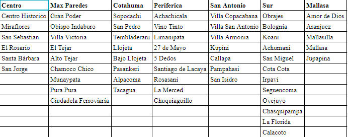
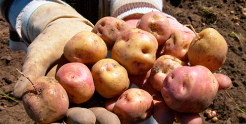
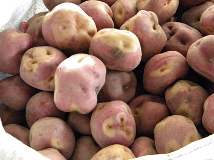
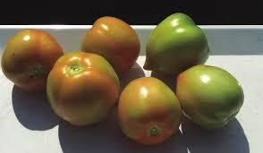
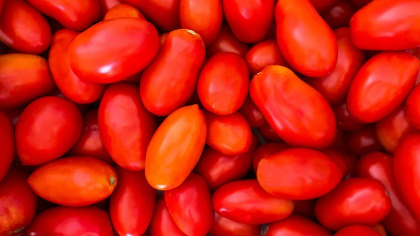
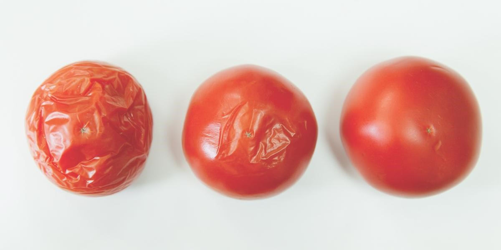

Encuesta al Consumidor
DATOS DE LOCALIZACIÓN (LLENADOS PREVIAMENTE POR EL ENCUESTADOR)
Encuestador
Macrodistrito
Centro
Max Paredes
Direccion de aplicacion
Canal de distribucion
Mayorista
Minorista
Feria
Tienda de Barrio
Supermercado
Presentacion
Hola, buenos días/tardes. Soy un estudiante universitario de la Universidad Mayor de San Andrés. Estamos desarrollando una encuesta relacionada al consumo de frutas y verduras y por qué la clientela las prefiere. Este proyecto tiene el objetivo de ayudar en el acceso de productos nutritivos al consumidor final ¿Podría regalarme 5 minutos de su tiempo por favor? Hacer una pausa mientras la persona decide. Si él/ella no expresa verbal o físicamente estar de acuerdo inmediatamente o pregunta: ¿qué es lo que necesitas/quieres?, rápidamente responde: Le haré algunas preguntas sobre los productos que ofrece, la cantidad que ofrece, la frecuencia con que le piden ciertos productos junto con la preferencia de sus clientes. En esta encuesta no le pediremos nombre ni firma y toda la información que nos brinde será completamente confidencial. Además usted puede interrumpir la encuesta si en algún momento tiene preguntas. ¿Cómo ve? ¿Se anima a apoyar con su punto de vista a todos los que tienen tiendas de barrio? Si la persona no se ha negado a empezar la encuesta hasta este punto, iniciamos con la encuesta. En caso contrario, menciona: ¡Por favor! Es por una buena causa, queremos que los mercados sigan prosperando a pesar de la gran competencia que para ellas representan otras opciones de compra. Por favor serán sólo 4 minutos. Si la persona no ha dicho no, empieza la encuesta. Si la persona se niega nuevamente, agradécele y deséale buen día.
SECCION I: Canal de Abastecimiento

¿De que zona Ud viene (Si no identifica el Macrodistrito, mostrar la tabla con las zonas de referencia)
Cotahuma
Max Paredes
Periférica
San Antonio
Sur
Mallasa
Centro
Canal de abastecimiento de su preferencia
Mercado Mayorista El Tejar
Mercado Minoristas (Ejem.Mercado Uruguay, Mercado Miraflores, Mercado Villa Fátima, Mercado Yungas)
Ferias Barriales (Ferias que solo ocurren 1 ó 2 veces por semana)
Tienda de Barrio
Supermercados
Otro
Puede encontrar todos estos productos en su lugar preferente de compra
Papa
Cebolla
Tomate
Banana
Manzana
Si no encuentra los productos en su lugar preferente de donde compra frutas y verduras
Mercado Mayorista El Tejar
Mercado Minoristas (Ejem.Mercado Uruguay, Mercado Miraflores, Mercado Villa Fátima, Mercado Yungas)
Ferias Barriales (Ferias que solo ocurren 1 ó 2 veces por semana)
Tienda de Barrio
Supermercados
Otro
SECCION II: Nivel Socioeconomico
a persona que toma las decisiones de compra de frutas y verduras en su hogar es:
Mujer
Varón
La edad de la persona que toma las decisiones de compra para la compra de frutas y verduras oscila entre el rango:
19-27 años
28-36 años
36-50 años
51-65 años
>65 años
La persona que toma las decisiones de compra lo hace usualmente para alimentar a:
1 persona
2 personas
3 personas
4 personas
Más de 4 personas
Cantidad de comidas que consume su familia al dia
1 vez al dia
2 veces al dia
3 veces al dia
Más de 3 veces
Condicion
Encuentra Papa, Cebolla y Tomate en el mismon mercado de su preferencia
Si
No
SECCION III: Caracteristicas logisticas de Papa, Cebolla y Tomate
¿Cuántas veces a la semana acude al lugar de compra de su preferencia para comprar...
...papa?
...cebolla?
...Tomate?
Diariamente
1 vez a la semana
2 veces a la semana
3 veces a la semana
1 vez al mes
¿Cuál es la distancia a su lugar de preferencia para comprar...
...papa?
...cebolla?
...Tomate?
Diariamente
1 vez a la semana
2 veces a la semana
3 veces a la semana
1 vez al mes
¿Qué cantidad de papa compra usualmente?
Menor a 1/4 arroba
1/4 arroba
½ arroba
1 arroba
Mayor a 1 arroba
Otro
¿Qué cantidad de cebolla compra usualmente?
Menor a 1/4 arroba
1/4 arroba
½ arroba
1 arroba
Mayor a 1 arroba
Otro
¿Qué cantidad de tomate compra usualmente?
1 lb
2 lb
3 lb
mayor a 2 lb
otro
Encuentra Banana y Manzana en el mismon mercado de su preferencia
Si
No
SECCION IV: Caracteristicas logisticas de Banana y Manzana
¿Cuántas veces a la semana acude al lugar de compra de su preferencia para comprar...
...banana?
...manzana?
Diariamente
1 vez a la semana
2 veces a la semana
3 veces a la semana
1 vez al mes
¿Cuál es la distancia a su lugar de preferencia para comprar...
...banana?
...manzana?
menor a 2 cuadras
2 - 5 cuadras
6-8 cuadras
mayor a 8 cuadras
¿Cuánto compra de banana?
Dos manos de banana (50 unidades)
Una mano de banana (25 unidades)
Mitad de una mano de banana (12 unidades)
Menos de 12 unidades
Otro
¿Cuánto compra de manzana?
Una caja de manzana
Media Caja de manzana
Monton de 4 u x 10 Bs
Monton de 5 u x 10 Bs
Montón de 6 u x 10 Bs
SECCION IV: Factores que influyen en la compra de frutas y verduras
Piense en sus compras y divida el 100% en los siguientes canales de distribucion:
Mercado Mayorista (El Tejar o Rodriguez)
Mercado Minoristas (Ejem.Mercado Uruguay, Mercado Miraflroes, Mercado Villa Fátima, Mercado Yungas)
Ferias Barriales (Ferias que solo ocurren 1 ó 2 veces por semana)
Tienda de Barrio
Supermercados
¿Cuán importante es para usted la CERCANÍA a la hora de escoger su lugar de compra?
Nada importante
Poco importante
Neutral
Muy importante
Totalmente importante
¿Cuán importante es para usted el PRECIO de los productos, a la hora de escoger su lugar de compra?
Nada importante
Poco importante
Neutral
Muy importante
Totalmente importante
Factor de variedad, En el momento de realizar su compra de frutas y verduras. El lugar de venta es un/una ...
Asentamiento (Minorista, Feria u otro) (Tamaño: 1 m2 o Menor a 1 m2)
Tarima (Minorista, Feria u otro)(Tamaño: 1 m2 - 2 m2)
Almacén (Mayorista, minorista)(Tamaño: Mayor a 2 m2)
En el momento de comprar papa, ¿En qué condiciones compra el producto?
Color rojizo con raíces

Color rojizo con ojos amarillo

Color amarillo con ojos profundos y aspecto arrugado
En el momento de comprar cebolla, ¿En qué condiciones compra el producto?
Ovalado con salida del tallo verdoso
Ovalado rosado con salida del tallo seco
Ovalado rosado, opaco con raíces crecidas
En el momento de comprar tomate, ¿En qué condiciones compra el producto?
Ovalado color rojizo con tonalidades verdes

Ovalado color rojizo

Ovalado color amarillo rojizo y con arrugas

En el momento de comprar banano, ¿En qué condiciones compra el producto?
Muy inmaduro de color verde
Inmaduro de color amarillo con verde
Maduro de color amarillo si ninguna peca
Maduro con un color amarillento con algunas pecas
Muy maduro con manchas negras en el cuerpo
En el momento de comprar manzana roja, ¿En qué condiciones compra el producto?
Inmadura de color verde
Inmaduro de color rojo con verde
Maduro de color rojizo
Maduro de color rojizo con pocos tonos de amarillo
Muy maduro con tonalidades de rojo y amarillo
SECCION V: Decisiones de Compra
Cuando llega al mercado (punto de venta) de su preferencia ¿ya sabe qué va a comprar?
Nunca
Rara vez
A veces
Frecuentemente
Siempre
Cuando llega al mercado (punto de venta) de su preferencia ¿ya sabe a quién va a comprar?
Nunca
Rara vez
A veces
Frecuentemente
Siempre
Cuando su lugar habitual de compra de papa, cebolla y tomate no se encuentra disponible ¿A qué otro lugar acude?
Mercado Mayorista (El Tejar)
Mercado Minoristas (Ejem.Mercado Uruguay, Mercado Miraflores, Mercado Villa Fátima, Mercado Yungas)
Ferias Barriales (Ferias que solo ocurren 1 o 2 veces por semana)
Tienda de Barrio
Supermercados
Otros
Cuando su lugar habitual de compra de banana y manzana no se encuentra disponible ¿A qué otro lugar acude?
Mercado Mayorista (El Tejar)
Mercado Minoristas (Ejem.Mercado Uruguay, Mercado Miraflores, Mercado Villa Fátima, Mercado Yungas)
Ferias Barriales (Ferias que solo ocurren 1 o 2 veces por semana)
Tienda de Barrio
Supermercados
Otros
¿Le gustaría adquirir estos productos en su tienda de barrio más cercana?
Si
No
Actualmente, ¿ por qué no compra en una tienda de barrio los productos mencionados?
Los productos son mas caros
No venden los productos en la tienda
Los productos no son frescos o estan muy guardados
Otro